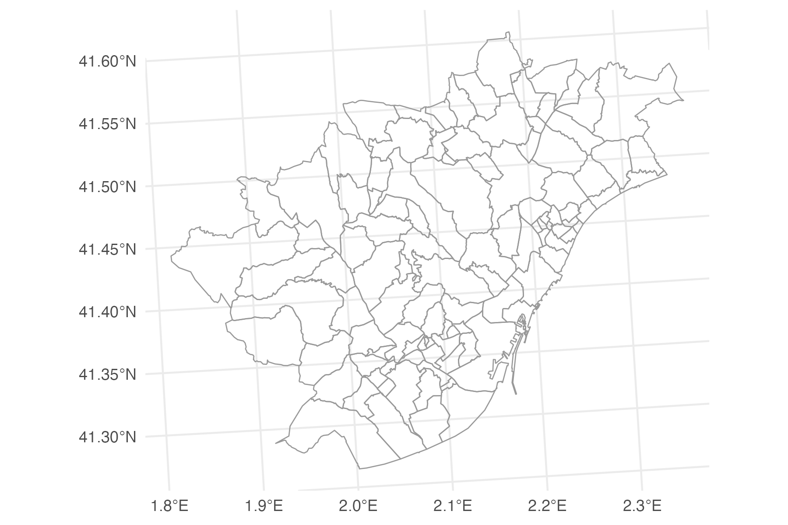

Sys.setenv(MAPBOX_TOKEN = "YOUR_MAPBOX_ACCESS_TOKEN")This tutorial shows how to make interactive ‘flow maps’ with data from spanishoddata and the flowmapblue (Boyandin 2024) data visualisation package. We cover two examples. First, we only visualise the total flows for a single day. In the second more advanced example we also use the time component that allows you to interactively filter flows by time of day. For both examples, make sure you first go though the initial setup steps. To make static flow maps, please see the static flow maps tutorial.
1 Setup
For the basemap in the final visualisation you will need a free Mapbox access token. You can get one at account.mapbox.com/access-tokens/ (you need to have a Mapbox account, which is free). You may skip this step, but in this case your interative flowmap will have no basemap, and the flows will just flow on solid colour background.
Once you got the access token, you can set it in the MAPBOX_TOKEN environment variable like so:
1.1 Set the data directory
Choose where spanishoddata should download (and convert) the data by setting the SPANISH_OD_DATA_DIR environment variable with the following command:
Sys.setenv(SPANISH_OD_DATA_DIR = "~/spanish_od_data")The package will create this directory if it does not exist on the first run of any function that downloads the data.
Setting data directory for advanced users
To permanently set the directory for all projects, you can specify the data directory globally by setting the SPANISH_OD_DATA_DIR environment variable, e.g. with the following command:
usethis::edit_r_environ()
# Then set the data directory globally, by typing this line in the file:SPANISH_OD_DATA_DIR = "~/spanish_od_data"You can also set the data directory locally, just for the current project. Set the ‘envar’ in the working directory by editing .Renviron file in the root of the project:
file.edit(".Renviron")2 Simple example - plot flows data as it is
2.1 Get data
2.1.1 Flows
Let us get the flows between districts for a tipycal working day 2021-04-07:
# Source: SQL [6 x 14]
# Database: DuckDB v1.0.0 [root@Darwin 23.6.0:R 4.4.1/:memory:]
date id_origin id_destination activity_origin activity_destination residence_province_ine_code residence_province_name time_slot distance n_trips trips_total_length_km year month day
<date> <fct> <fct> <fct> <fct> <fct> <fct> <int> <fct> <dbl> <dbl> <int> <int> <int>
1 2021-04-07 01001_AM 01001_AM home other 01 Araba/Álava 0 005-010 10.5 68.9 2021 4 7
2 2021-04-07 01001_AM 01001_AM home other 01 Araba/Álava 0 010-050 12.6 127. 2021 4 7
3 2021-04-07 01001_AM 01001_AM home other 01 Araba/Álava 1 010-050 12.6 232. 2021 4 7
4 2021-04-07 01001_AM 01001_AM home other 01 Araba/Álava 2 005-010 10.8 102. 2021 4 7
5 2021-04-07 01001_AM 01001_AM home other 01 Araba/Álava 5 005-010 18.9 156. 2021 4 7
6 2021-04-07 01001_AM 01001_AM home other 01 Araba/Álava 6 010-050 10.8 119. 2021 4 72.1.2 Zones
We also get the district zones polygons to mathch the flows. We use version 1 for the polygons, because the selected date is in 2021, which corresponds to the v1 data (see the relevant codebook).
districts_v1 <- spod_get_zones("dist", ver = 1)
head(districts_v1)Simple feature collection with 6 features and 6 fields
Geometry type: MULTIPOLYGON
Dimension: XY
Bounding box: xmin: 289502.8 ymin: 4173922 xmax: 1010926 ymax: 4720817
Projected CRS: ETRS89 / UTM zone 30N (N-E)
# A tibble: 6 × 7
id census_districts municipalities_mitma municipalities district_names_in_v2 district_ids_in_v2 geom
<chr> <chr> <chr> <chr> <chr> <chr> <MULTIPOLYGON [m]>
1 2408910 2408910 24089 24089 León distrito 10 2408910 (((290940.1 4719080, 290…
2 22117_AM 2210201; 2210301; 2211501; 2211701; 2216401; 2218701; 2221401 22117_AM 22102; 22103; 22115; 22117; 22164; 22187; 22214; 22102; 22103; 22115; 22117; 22164; 22187; 222… Graus agregacion de… 22117_AM (((774184.4 4662153, 774…
3 2305009 2305009 23050 23050 Jaén distrito 09 2305009 (((429745 4179977, 42971…
4 07058_AM 0701901; 0702501; 0703401; 0705801; 0705802 07058_AM 07019; 07025; 07034; 07058; 07019; 07025; 07034; 07058; 07019; 07025; 07034; 07058; 07019; 070… Selva agregacion de… 07058_AM (((1000859 4415059, 1000…
5 2305006 2305006 23050 23050 Jaén distrito 06 2305006 (((429795.1 4180957, 429…
6 2305005 2305005 23050 23050 Jaén distrito 05 2305005 (((430022.7 4181101, 429…2.2 Prepare data for visualization
2.2.1 Expected data format
To visualise the flows, flowmapblue expects two data.frames in the following format (we use the packages’s built-in data on Switzerland for illustration):
Locations
A data.frame with id, optional name, as well as lat and lon for coordinates of the locations in WGS84 (EPSG: 4326) coordinate reference system.
str(flowmapblue::ch_locations)'data.frame': 26 obs. of 4 variables:
$ id : chr "ZH" "LU" "UR" "SZ" ...
$ name: chr "Zürich" "Luzern" "Uri" "Schwyz" ...
$ lat : num 47.4 47.1 46.8 47.1 46.9 ...
$ lon : num 8.65 8.11 8.63 8.76 8.24 ...Flows
A data.frame with origin, dest, and count for the flows between locations, where origin and dest must match with id’s of the locations data.frame from above, and count is the number of trips between them.
str(flowmapblue::ch_flows)
'data.frame': 676 obs. of 3 variables:
$ origin: chr "ZH" "ZH" "ZH" "ZH" ...
$ dest : chr "ZH" "BE" "LU" "UR" ...
$ count : int 66855 1673 1017 84 1704 70 94 250 1246 173 ...2.2.2 Aggregate data - count total flows
# A tibble: 6 × 3
origin dest count
<fct> <fct> <dbl>
1 01001_AM 01036 39.8
2 01001_AM 01051 2508.
3 01001_AM 0105903 1644.
4 01001_AM 09363_AM 3.96
5 01001_AM 09907_AM 32.6
6 01001_AM 17033 9.612.3 Create locations table with coordinates
We need the coordinates for each origin and destination. We can use the centroids of districts_v1 polygons for that.
districts_v1_centroids <- districts_v1 |>
st_transform(4326) |>
st_centroid() |>
st_coordinates() |>
as.data.frame() |>
mutate(id = districts_v1$id) |>
rename(lon = X, lat = Y)
head(districts_v1_centroids) lon lat id
1 -5.5551053 42.59849 2408910
2 0.3260681 42.17266 22117_AM
3 -3.8136448 37.74344 2305009
4 2.8542636 39.80672 07058_AM
5 -3.8229513 37.77294 2305006
6 -3.8151096 37.86309 23050052.4 Create the plot
Remember, what for the map to have a basemap, you need to have setup your Mapbox access token in the setup section of this vignette.
Create the interactive flowmap with the flowmapblue function. In the example below we use the darkMode and clustering, and we disable the animation. We do not recommend disabling the clustering when plotting the flows between hundreds and thousands of locations, as this will reduce the redability of the map.
flowmap <- flowmapblue(
locations = districts_v1_centroids,
flows = od_20210407_total,
mapboxAccessToken = Sys.getenv("MAPBOX_TOKEN"),
darkMode = TRUE,
animation = FALSE,
clustering = TRUE
)
flowmap
You can play around with the arguments of the flowmapblue function. For example, you can turn on the animation mode:
flowmap_anim <- flowmapblue(
locations = districts_v1_centroids,
flows = od_20210407_total,
mapboxAccessToken = Sys.getenv("MAPBOX_TOKEN"),
darkMode = TRUE,
animation = TRUE,
clustering = TRUE
)
flowmap_anim3 Advanced example - time filter
After following the simple example, let us now add a time filter to the flows. We will use the flowmapblue function to plot flows between districts_v1_centroids for a typical working day 2021-04-07.
3.1 Prepare data for visualization
Just like before, we aggregate the data and rename some columns. This time we will keep combine the date and time_slot (which corresponds to the hour of the day) to procude timestamps, so that the flows can be interactively filtered by time of day.
od_20210407_time <- od_20210407 |>
mutate(time = as.POSIXct(paste0(date, "T", time_slot, ":00:00"))) |>
group_by(origin = id_origin, dest = id_destination, time) |>
summarise(count = sum(n_trips, na.rm = TRUE), .groups = "drop") |>
collect()
head(od_20210407_time)# A tibble: 6 × 4
origin dest time count
<fct> <fct> <dttm> <dbl>
1 08054 0818401 2021-04-07 01:00:00 43.7
2 08054 0818401 2021-04-07 17:00:00 87.1
3 08054 0818402 2021-04-07 16:00:00 62.6
4 08054 0818403 2021-04-07 05:00:00 26.8
5 08054 0818403 2021-04-07 07:00:00 44.9
6 08054 0818403 2021-04-07 02:00:00 7.113.1.0.1 Filter the zones
Because we are now using the flows for each hour of the day, there are 24 times more rows in this data, than in the simple example. Therefore it will take longer to generate the plot and the resulting visualisation may work slower. To create a more manageable example, let us only filter the data to Madrid and surrounding areas.
Let us select all districts that correspond to Barcelona and a 10 km radius around it. Thanks to the district_names_in_v2 column in the zones data, we can easily select all the districts that correspond to Barcelona and then apply the spatial join on the to select some more districts around the polygons that correspond to Barcelona.
zones_barcelona <- districts_v1 |>
filter(grepl("Barcelona", district_names_in_v2, ignore.case = TRUE))
zones_barcelona_fua <- districts_v1[
st_buffer(zones_barcelona, dist = 10000)
,
]
zones_barcelona_fua_plot <- ggplot() +
geom_sf(data = zones_barcelona_fua, fill=NA, col = "grey60", linewidth = 0.3) +
theme_minimal()
zones_barcelona_fua_plot
Now we prepare the table with coordinates for the flowmap:
zones_barcelona_fua_coords <- zones_barcelona_fua |>
st_transform(crs = 4326) |>
st_centroid() |>
st_coordinates() |>
as.data.frame() |>
mutate(id = zones_barcelona_fua$id) |>
rename(lon = X, lat = Y)
head(zones_barcelona_fua_coords) lon lat id
1 2.154317 41.49969 08180
2 1.968438 41.48274 08054
3 2.106401 41.41265 0801905
4 2.118221 41.38697 0801904
5 2.150536 41.42915 0801907
6 2.152419 41.41014 08019063.1.0.2 Prepare the flows
Now we can use the zone ids from the zones_barcelona_fua data to select the flows that correspond to Barcelona and the 10 km radius around it.
3.1.0.3 Visualise the flows for Barcelona and surrounding areas
Now, we can create a new plot with this data.
flowmap_time <- flowmapblue(
locations = zones_barcelona_fua_coords,
flows = od_20210407_time_barcelona,
mapboxAccessToken = Sys.getenv("MAPBOX_TOKEN"),
darkMode = TRUE,
animation = FALSE,
clustering = TRUE
)
flowmap_time
Boyandin, Ilya. 2024. Flowmap.blue Widget for r. https://doi.org/10.32614/CRAN.package.flowmapblue.